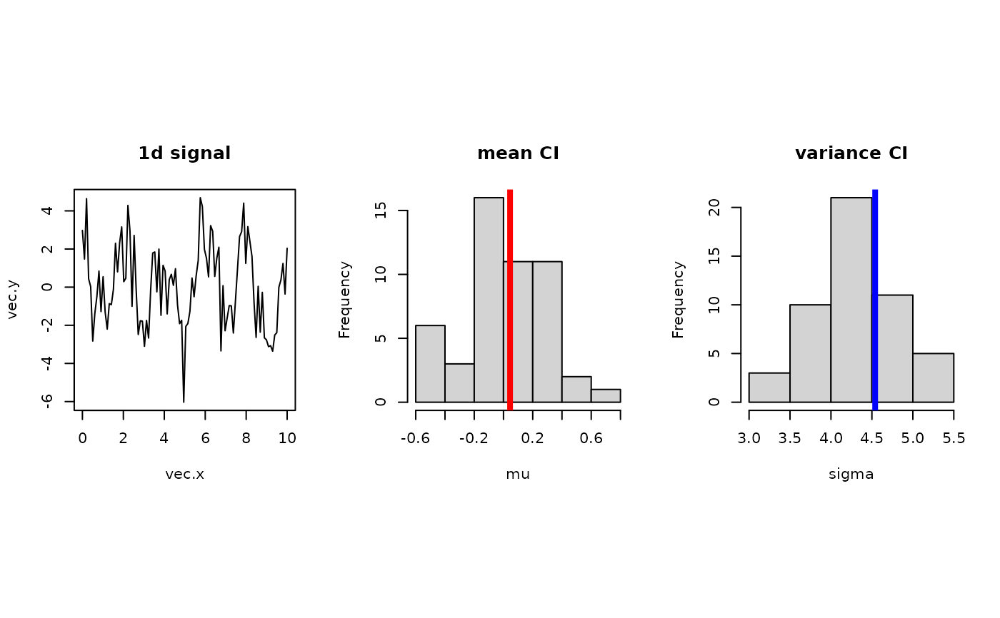

Assuming data being dependent with cardinality N, boot.stationary returns
a vector of index that is used for stationary bootstrapping. To describe, starting points
are drawn from uniform distribution over 1:N and the size of each block is
determined from geometric distribution with parameter \(p\).
boot.stationary(N, p = 0.25)
| N | the number of observations. |
|---|---|
| p | parameter for geometric distribution with the size of each block. |
a vector of length N for moving block bootstrap sampling.
Politis DN, Romano JP (1994). “The Stationary Bootstrap.” Journal of the American Statistical Association, 89(428), 1303. ISSN 01621459, doi: 10.2307/2290993 .
## example : bootstrap confidence interval of mean and variances vec.x = seq(from=0,to=10,length.out=1000) vec.y = sin(1.21*vec.x) + 2*cos(3.14*vec.x) + rnorm(1000,sd=1.5) data.mu = mean(vec.y) data.var = var(vec.y) ## apply stationary bootstrapping nreps = 496 vec.mu = rep(0,nreps) vec.var = rep(0,nreps) for (i in 1:nreps){ sample.id = boot.stationary(1000) sample.y = vec.y[sample.id] vec.mu[i] = mean(sample.y) vec.var[i] = var(sample.y) print(paste("iteration ",i,"/",nreps," complete.", sep="")) }#> [1] "iteration 1/496 complete." #> [1] "iteration 2/496 complete." #> [1] "iteration 3/496 complete." #> [1] "iteration 4/496 complete." #> [1] "iteration 5/496 complete." #> [1] "iteration 6/496 complete." #> [1] "iteration 7/496 complete." #> [1] "iteration 8/496 complete." #> [1] "iteration 9/496 complete." #> [1] "iteration 10/496 complete." #> [1] "iteration 11/496 complete." #> [1] "iteration 12/496 complete." #> [1] "iteration 13/496 complete." #> [1] "iteration 14/496 complete." #> [1] "iteration 15/496 complete." #> [1] "iteration 16/496 complete." #> [1] "iteration 17/496 complete." #> [1] "iteration 18/496 complete." #> [1] "iteration 19/496 complete." #> [1] "iteration 20/496 complete." #> [1] "iteration 21/496 complete." #> [1] "iteration 22/496 complete." #> [1] "iteration 23/496 complete." #> [1] "iteration 24/496 complete." #> [1] "iteration 25/496 complete." #> [1] "iteration 26/496 complete." #> [1] "iteration 27/496 complete." #> [1] "iteration 28/496 complete." #> [1] "iteration 29/496 complete." #> [1] "iteration 30/496 complete." #> [1] "iteration 31/496 complete." #> [1] "iteration 32/496 complete." #> [1] "iteration 33/496 complete." #> [1] "iteration 34/496 complete." #> [1] "iteration 35/496 complete." #> [1] "iteration 36/496 complete." #> [1] "iteration 37/496 complete." #> [1] "iteration 38/496 complete." #> [1] "iteration 39/496 complete." #> [1] "iteration 40/496 complete." #> [1] "iteration 41/496 complete." #> [1] "iteration 42/496 complete." #> [1] "iteration 43/496 complete." #> [1] "iteration 44/496 complete." #> [1] "iteration 45/496 complete." #> [1] "iteration 46/496 complete." #> [1] "iteration 47/496 complete." #> [1] "iteration 48/496 complete." #> [1] "iteration 49/496 complete." #> [1] "iteration 50/496 complete." #> [1] "iteration 51/496 complete." #> [1] "iteration 52/496 complete." #> [1] "iteration 53/496 complete." #> [1] "iteration 54/496 complete." #> [1] "iteration 55/496 complete." #> [1] "iteration 56/496 complete." #> [1] "iteration 57/496 complete." #> [1] "iteration 58/496 complete." #> [1] "iteration 59/496 complete." #> [1] "iteration 60/496 complete." #> [1] "iteration 61/496 complete." #> [1] "iteration 62/496 complete." #> [1] "iteration 63/496 complete." #> [1] "iteration 64/496 complete." #> [1] "iteration 65/496 complete." #> [1] "iteration 66/496 complete." #> [1] "iteration 67/496 complete." #> [1] "iteration 68/496 complete." #> [1] "iteration 69/496 complete." #> [1] "iteration 70/496 complete." #> [1] "iteration 71/496 complete." #> [1] "iteration 72/496 complete." #> [1] "iteration 73/496 complete." #> [1] "iteration 74/496 complete." #> [1] "iteration 75/496 complete." #> [1] "iteration 76/496 complete." #> [1] "iteration 77/496 complete." #> [1] "iteration 78/496 complete." #> [1] "iteration 79/496 complete." #> [1] "iteration 80/496 complete." #> [1] "iteration 81/496 complete." #> [1] "iteration 82/496 complete." #> [1] "iteration 83/496 complete." #> [1] "iteration 84/496 complete." #> [1] "iteration 85/496 complete." #> [1] "iteration 86/496 complete." #> [1] "iteration 87/496 complete." #> [1] "iteration 88/496 complete." #> [1] "iteration 89/496 complete." #> [1] "iteration 90/496 complete." #> [1] "iteration 91/496 complete." #> [1] "iteration 92/496 complete." #> [1] "iteration 93/496 complete." #> [1] "iteration 94/496 complete." #> [1] "iteration 95/496 complete." #> [1] "iteration 96/496 complete." #> [1] "iteration 97/496 complete." #> [1] "iteration 98/496 complete." #> [1] "iteration 99/496 complete." #> [1] "iteration 100/496 complete." #> [1] "iteration 101/496 complete." #> [1] "iteration 102/496 complete." #> [1] "iteration 103/496 complete." #> [1] "iteration 104/496 complete." #> [1] "iteration 105/496 complete." #> [1] "iteration 106/496 complete." #> [1] "iteration 107/496 complete." #> [1] "iteration 108/496 complete." #> [1] "iteration 109/496 complete." #> [1] "iteration 110/496 complete." #> [1] "iteration 111/496 complete." #> [1] "iteration 112/496 complete." #> [1] "iteration 113/496 complete." #> [1] "iteration 114/496 complete." #> [1] "iteration 115/496 complete." #> [1] "iteration 116/496 complete." #> [1] "iteration 117/496 complete." #> [1] "iteration 118/496 complete." #> [1] "iteration 119/496 complete." #> [1] "iteration 120/496 complete." #> [1] "iteration 121/496 complete." #> [1] "iteration 122/496 complete." #> [1] "iteration 123/496 complete." #> [1] "iteration 124/496 complete." #> [1] "iteration 125/496 complete." #> [1] "iteration 126/496 complete." #> [1] "iteration 127/496 complete." #> [1] "iteration 128/496 complete." #> [1] "iteration 129/496 complete." #> [1] "iteration 130/496 complete." #> [1] "iteration 131/496 complete." #> [1] "iteration 132/496 complete." #> [1] "iteration 133/496 complete." #> [1] "iteration 134/496 complete." #> [1] "iteration 135/496 complete." #> [1] "iteration 136/496 complete." #> [1] "iteration 137/496 complete." #> [1] "iteration 138/496 complete." #> [1] "iteration 139/496 complete." #> [1] "iteration 140/496 complete." #> [1] "iteration 141/496 complete." #> [1] "iteration 142/496 complete." #> [1] "iteration 143/496 complete." #> [1] "iteration 144/496 complete." #> [1] "iteration 145/496 complete." #> [1] "iteration 146/496 complete." #> [1] "iteration 147/496 complete." #> [1] "iteration 148/496 complete." #> [1] "iteration 149/496 complete." #> [1] "iteration 150/496 complete." #> [1] "iteration 151/496 complete." #> [1] "iteration 152/496 complete." #> [1] "iteration 153/496 complete." #> [1] "iteration 154/496 complete." #> [1] "iteration 155/496 complete." #> [1] "iteration 156/496 complete." #> [1] "iteration 157/496 complete." #> [1] "iteration 158/496 complete." #> [1] "iteration 159/496 complete." #> [1] "iteration 160/496 complete." #> [1] "iteration 161/496 complete." #> [1] "iteration 162/496 complete." #> [1] "iteration 163/496 complete." #> [1] "iteration 164/496 complete." #> [1] "iteration 165/496 complete." #> [1] "iteration 166/496 complete." #> [1] "iteration 167/496 complete." #> [1] "iteration 168/496 complete." #> [1] "iteration 169/496 complete." #> [1] "iteration 170/496 complete." #> [1] "iteration 171/496 complete." #> [1] "iteration 172/496 complete." #> [1] "iteration 173/496 complete." #> [1] "iteration 174/496 complete." #> [1] "iteration 175/496 complete." #> [1] "iteration 176/496 complete." #> [1] "iteration 177/496 complete." #> [1] "iteration 178/496 complete." #> [1] "iteration 179/496 complete." #> [1] "iteration 180/496 complete." #> [1] "iteration 181/496 complete." #> [1] "iteration 182/496 complete." #> [1] "iteration 183/496 complete." #> [1] "iteration 184/496 complete." #> [1] "iteration 185/496 complete." #> [1] "iteration 186/496 complete." #> [1] "iteration 187/496 complete." #> [1] "iteration 188/496 complete." #> [1] "iteration 189/496 complete." #> [1] "iteration 190/496 complete." #> [1] "iteration 191/496 complete." #> [1] "iteration 192/496 complete." #> [1] "iteration 193/496 complete." #> [1] "iteration 194/496 complete." #> [1] "iteration 195/496 complete." #> [1] "iteration 196/496 complete." #> [1] "iteration 197/496 complete." #> [1] "iteration 198/496 complete." #> [1] "iteration 199/496 complete." #> [1] "iteration 200/496 complete." #> [1] "iteration 201/496 complete." #> [1] "iteration 202/496 complete." #> [1] "iteration 203/496 complete." #> [1] "iteration 204/496 complete." #> [1] "iteration 205/496 complete." #> [1] "iteration 206/496 complete." #> [1] "iteration 207/496 complete." #> [1] "iteration 208/496 complete." #> [1] "iteration 209/496 complete." #> [1] "iteration 210/496 complete." #> [1] "iteration 211/496 complete." #> [1] "iteration 212/496 complete." #> [1] "iteration 213/496 complete." #> [1] "iteration 214/496 complete." #> [1] "iteration 215/496 complete." #> [1] "iteration 216/496 complete." #> [1] "iteration 217/496 complete." #> [1] "iteration 218/496 complete." #> [1] "iteration 219/496 complete." #> [1] "iteration 220/496 complete." #> [1] "iteration 221/496 complete." #> [1] "iteration 222/496 complete." #> [1] "iteration 223/496 complete." #> [1] "iteration 224/496 complete." #> [1] "iteration 225/496 complete." #> [1] "iteration 226/496 complete." #> [1] "iteration 227/496 complete." #> [1] "iteration 228/496 complete." #> [1] "iteration 229/496 complete." #> [1] "iteration 230/496 complete." #> [1] "iteration 231/496 complete." #> [1] "iteration 232/496 complete." #> [1] "iteration 233/496 complete." #> [1] "iteration 234/496 complete." #> [1] "iteration 235/496 complete." #> [1] "iteration 236/496 complete." #> [1] "iteration 237/496 complete." #> [1] "iteration 238/496 complete." #> [1] "iteration 239/496 complete." #> [1] "iteration 240/496 complete." #> [1] "iteration 241/496 complete." #> [1] "iteration 242/496 complete." #> [1] "iteration 243/496 complete." #> [1] "iteration 244/496 complete." #> [1] "iteration 245/496 complete." #> [1] "iteration 246/496 complete." #> [1] "iteration 247/496 complete." #> [1] "iteration 248/496 complete." #> [1] "iteration 249/496 complete." #> [1] "iteration 250/496 complete." #> [1] "iteration 251/496 complete." #> [1] "iteration 252/496 complete." #> [1] "iteration 253/496 complete." #> [1] "iteration 254/496 complete." #> [1] "iteration 255/496 complete." #> [1] "iteration 256/496 complete." #> [1] "iteration 257/496 complete." #> [1] "iteration 258/496 complete." #> [1] "iteration 259/496 complete." #> [1] "iteration 260/496 complete." #> [1] "iteration 261/496 complete." #> [1] "iteration 262/496 complete." #> [1] "iteration 263/496 complete." #> [1] "iteration 264/496 complete." #> [1] "iteration 265/496 complete." #> [1] "iteration 266/496 complete." #> [1] "iteration 267/496 complete." #> [1] "iteration 268/496 complete." #> [1] "iteration 269/496 complete." #> [1] "iteration 270/496 complete." #> [1] "iteration 271/496 complete." #> [1] "iteration 272/496 complete." #> [1] "iteration 273/496 complete." #> [1] "iteration 274/496 complete." #> [1] "iteration 275/496 complete." #> [1] "iteration 276/496 complete." #> [1] "iteration 277/496 complete." #> [1] "iteration 278/496 complete." #> [1] "iteration 279/496 complete." #> [1] "iteration 280/496 complete." #> [1] "iteration 281/496 complete." #> [1] "iteration 282/496 complete." #> [1] "iteration 283/496 complete." #> [1] "iteration 284/496 complete." #> [1] "iteration 285/496 complete." #> [1] "iteration 286/496 complete." #> [1] "iteration 287/496 complete." #> [1] "iteration 288/496 complete." #> [1] "iteration 289/496 complete." #> [1] "iteration 290/496 complete." #> [1] "iteration 291/496 complete." #> [1] "iteration 292/496 complete." #> [1] "iteration 293/496 complete." #> [1] "iteration 294/496 complete." #> [1] "iteration 295/496 complete." #> [1] "iteration 296/496 complete." #> [1] "iteration 297/496 complete." #> [1] "iteration 298/496 complete." #> [1] "iteration 299/496 complete." #> [1] "iteration 300/496 complete." #> [1] "iteration 301/496 complete." #> [1] "iteration 302/496 complete." #> [1] "iteration 303/496 complete." #> [1] "iteration 304/496 complete." #> [1] "iteration 305/496 complete." #> [1] "iteration 306/496 complete." #> [1] "iteration 307/496 complete." #> [1] "iteration 308/496 complete." #> [1] "iteration 309/496 complete." #> [1] "iteration 310/496 complete." #> [1] "iteration 311/496 complete." #> [1] "iteration 312/496 complete." #> [1] "iteration 313/496 complete." #> [1] "iteration 314/496 complete." #> [1] "iteration 315/496 complete." #> [1] "iteration 316/496 complete." #> [1] "iteration 317/496 complete." #> [1] "iteration 318/496 complete." #> [1] "iteration 319/496 complete." #> [1] "iteration 320/496 complete." #> [1] "iteration 321/496 complete." #> [1] "iteration 322/496 complete." #> [1] "iteration 323/496 complete." #> [1] "iteration 324/496 complete." #> [1] "iteration 325/496 complete." #> [1] "iteration 326/496 complete." #> [1] "iteration 327/496 complete." #> [1] "iteration 328/496 complete." #> [1] "iteration 329/496 complete." #> [1] "iteration 330/496 complete." #> [1] "iteration 331/496 complete." #> [1] "iteration 332/496 complete." #> [1] "iteration 333/496 complete." #> [1] "iteration 334/496 complete." #> [1] "iteration 335/496 complete." #> [1] "iteration 336/496 complete." #> [1] "iteration 337/496 complete." #> [1] "iteration 338/496 complete." #> [1] "iteration 339/496 complete." #> [1] "iteration 340/496 complete." #> [1] "iteration 341/496 complete." #> [1] "iteration 342/496 complete." #> [1] "iteration 343/496 complete." #> [1] "iteration 344/496 complete." #> [1] "iteration 345/496 complete." #> [1] "iteration 346/496 complete." #> [1] "iteration 347/496 complete." #> [1] "iteration 348/496 complete." #> [1] "iteration 349/496 complete." #> [1] "iteration 350/496 complete." #> [1] "iteration 351/496 complete." #> [1] "iteration 352/496 complete." #> [1] "iteration 353/496 complete." #> [1] "iteration 354/496 complete." #> [1] "iteration 355/496 complete." #> [1] "iteration 356/496 complete." #> [1] "iteration 357/496 complete." #> [1] "iteration 358/496 complete." #> [1] "iteration 359/496 complete." #> [1] "iteration 360/496 complete." #> [1] "iteration 361/496 complete." #> [1] "iteration 362/496 complete." #> [1] "iteration 363/496 complete." #> [1] "iteration 364/496 complete." #> [1] "iteration 365/496 complete." #> [1] "iteration 366/496 complete." #> [1] "iteration 367/496 complete." #> [1] "iteration 368/496 complete." #> [1] "iteration 369/496 complete." #> [1] "iteration 370/496 complete." #> [1] "iteration 371/496 complete." #> [1] "iteration 372/496 complete." #> [1] "iteration 373/496 complete." #> [1] "iteration 374/496 complete." #> [1] "iteration 375/496 complete." #> [1] "iteration 376/496 complete." #> [1] "iteration 377/496 complete." #> [1] "iteration 378/496 complete." #> [1] "iteration 379/496 complete." #> [1] "iteration 380/496 complete." #> [1] "iteration 381/496 complete." #> [1] "iteration 382/496 complete." #> [1] "iteration 383/496 complete." #> [1] "iteration 384/496 complete." #> [1] "iteration 385/496 complete." #> [1] "iteration 386/496 complete." #> [1] "iteration 387/496 complete." #> [1] "iteration 388/496 complete." #> [1] "iteration 389/496 complete." #> [1] "iteration 390/496 complete." #> [1] "iteration 391/496 complete." #> [1] "iteration 392/496 complete." #> [1] "iteration 393/496 complete." #> [1] "iteration 394/496 complete." #> [1] "iteration 395/496 complete." #> [1] "iteration 396/496 complete." #> [1] "iteration 397/496 complete." #> [1] "iteration 398/496 complete." #> [1] "iteration 399/496 complete." #> [1] "iteration 400/496 complete." #> [1] "iteration 401/496 complete." #> [1] "iteration 402/496 complete." #> [1] "iteration 403/496 complete." #> [1] "iteration 404/496 complete." #> [1] "iteration 405/496 complete." #> [1] "iteration 406/496 complete." #> [1] "iteration 407/496 complete." #> [1] "iteration 408/496 complete." #> [1] "iteration 409/496 complete." #> [1] "iteration 410/496 complete." #> [1] "iteration 411/496 complete." #> [1] "iteration 412/496 complete." #> [1] "iteration 413/496 complete." #> [1] "iteration 414/496 complete." #> [1] "iteration 415/496 complete." #> [1] "iteration 416/496 complete." #> [1] "iteration 417/496 complete." #> [1] "iteration 418/496 complete." #> [1] "iteration 419/496 complete." #> [1] "iteration 420/496 complete." #> [1] "iteration 421/496 complete." #> [1] "iteration 422/496 complete." #> [1] "iteration 423/496 complete." #> [1] "iteration 424/496 complete." #> [1] "iteration 425/496 complete." #> [1] "iteration 426/496 complete." #> [1] "iteration 427/496 complete." #> [1] "iteration 428/496 complete." #> [1] "iteration 429/496 complete." #> [1] "iteration 430/496 complete." #> [1] "iteration 431/496 complete." #> [1] "iteration 432/496 complete." #> [1] "iteration 433/496 complete." #> [1] "iteration 434/496 complete." #> [1] "iteration 435/496 complete." #> [1] "iteration 436/496 complete." #> [1] "iteration 437/496 complete." #> [1] "iteration 438/496 complete." #> [1] "iteration 439/496 complete." #> [1] "iteration 440/496 complete." #> [1] "iteration 441/496 complete." #> [1] "iteration 442/496 complete." #> [1] "iteration 443/496 complete." #> [1] "iteration 444/496 complete." #> [1] "iteration 445/496 complete." #> [1] "iteration 446/496 complete." #> [1] "iteration 447/496 complete." #> [1] "iteration 448/496 complete." #> [1] "iteration 449/496 complete." #> [1] "iteration 450/496 complete." #> [1] "iteration 451/496 complete." #> [1] "iteration 452/496 complete." #> [1] "iteration 453/496 complete." #> [1] "iteration 454/496 complete." #> [1] "iteration 455/496 complete." #> [1] "iteration 456/496 complete." #> [1] "iteration 457/496 complete." #> [1] "iteration 458/496 complete." #> [1] "iteration 459/496 complete." #> [1] "iteration 460/496 complete." #> [1] "iteration 461/496 complete." #> [1] "iteration 462/496 complete." #> [1] "iteration 463/496 complete." #> [1] "iteration 464/496 complete." #> [1] "iteration 465/496 complete." #> [1] "iteration 466/496 complete." #> [1] "iteration 467/496 complete." #> [1] "iteration 468/496 complete." #> [1] "iteration 469/496 complete." #> [1] "iteration 470/496 complete." #> [1] "iteration 471/496 complete." #> [1] "iteration 472/496 complete." #> [1] "iteration 473/496 complete." #> [1] "iteration 474/496 complete." #> [1] "iteration 475/496 complete." #> [1] "iteration 476/496 complete." #> [1] "iteration 477/496 complete." #> [1] "iteration 478/496 complete." #> [1] "iteration 479/496 complete." #> [1] "iteration 480/496 complete." #> [1] "iteration 481/496 complete." #> [1] "iteration 482/496 complete." #> [1] "iteration 483/496 complete." #> [1] "iteration 484/496 complete." #> [1] "iteration 485/496 complete." #> [1] "iteration 486/496 complete." #> [1] "iteration 487/496 complete." #> [1] "iteration 488/496 complete." #> [1] "iteration 489/496 complete." #> [1] "iteration 490/496 complete." #> [1] "iteration 491/496 complete." #> [1] "iteration 492/496 complete." #> [1] "iteration 493/496 complete." #> [1] "iteration 494/496 complete." #> [1] "iteration 495/496 complete." #> [1] "iteration 496/496 complete."## visualize opar <- par(no.readonly=TRUE) par(mfrow=c(1,3), pty="s") plot(vec.x, vec.y, type="l", main="1d signal") # 1d signal hist(vec.mu, main="mean CI", xlab="mu") # mean abline(v=data.mu, col="red", lwd=4) hist(vec.var, main="variance CI", xlab="sigma") # variancepar(opar)